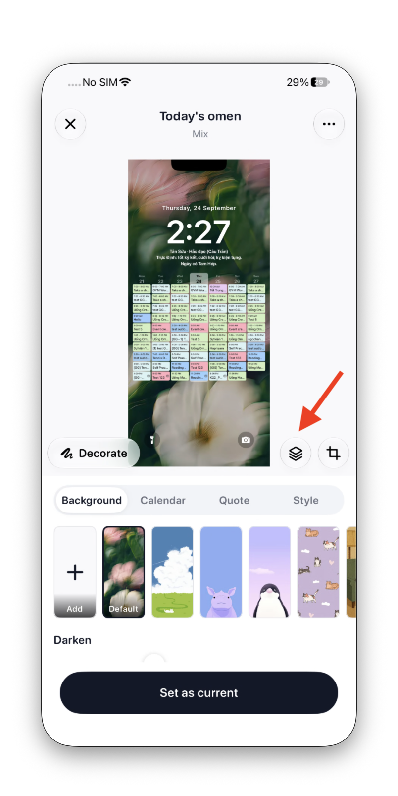
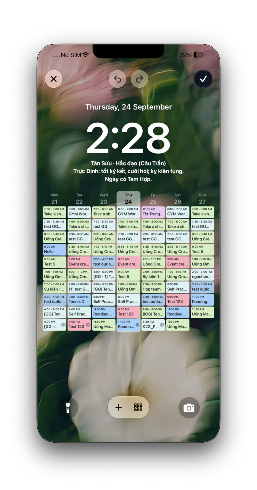
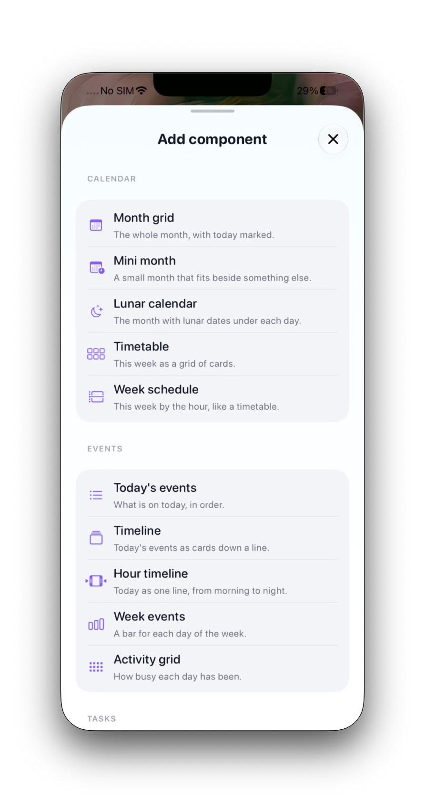
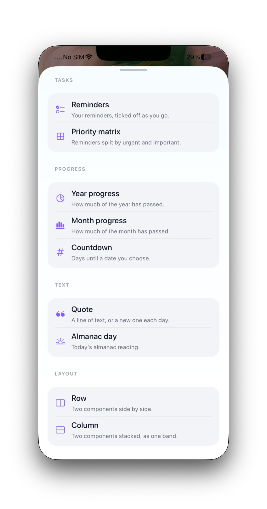
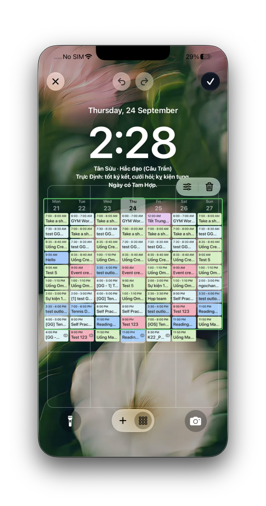
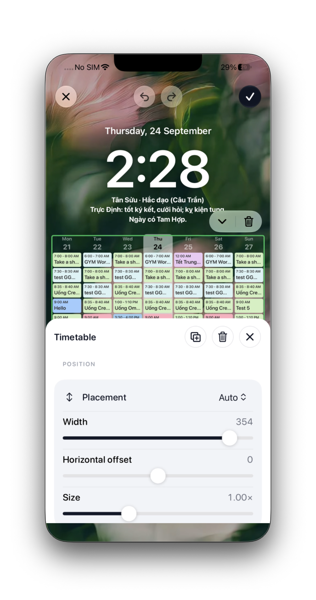
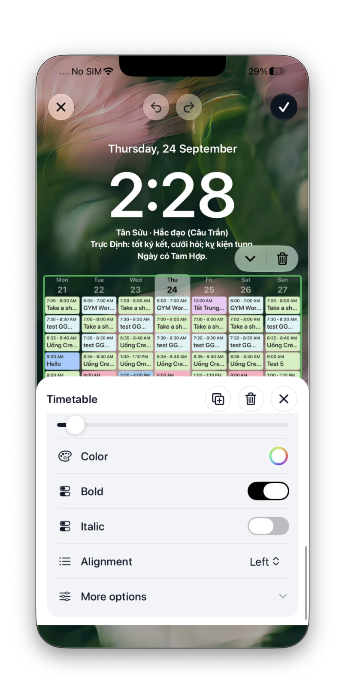
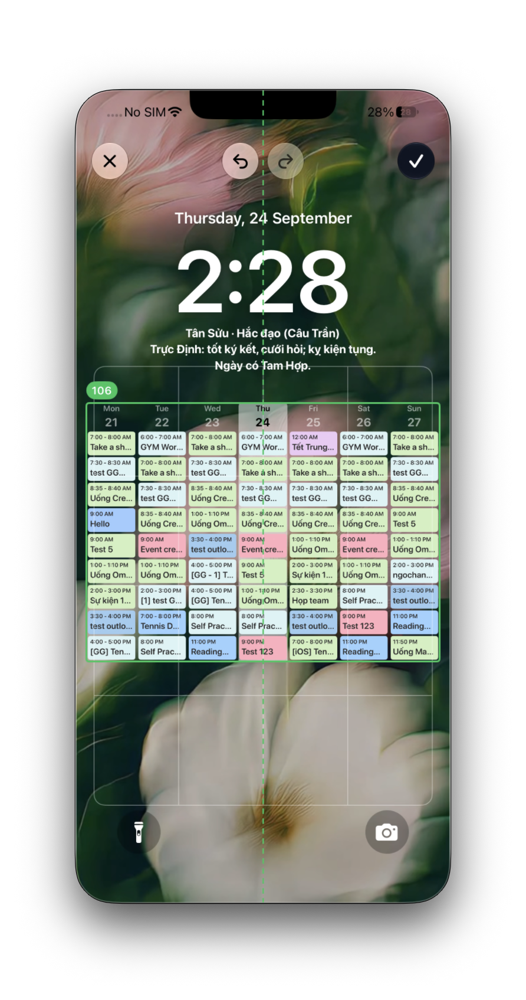

Bản vẽ cho 7 tính năng mở rộng TemplateEditorScreen: chạm chọn thành phần trên preview, sửa sâu từng thành phần, thêm/xoá thành phần, kéo thả trực tiếp. Đọc kèm PRD.
Chưa build — đây là đề xuất
Bộ docs/ux/01–11 mô tả UI đang ship, quét từ ios/Ink/UI/. File này thì ngược lại: nó mô tả UI chưa tồn tại. Vì vậy nó nằm ngoài bộ đánh số. Khi tính năng ship xong, nội dung phải được gộp vào mục WP-EDIT của 03-wallpaper.html và file này xoá đi.
Batch QC đầu tiên đã chụp — nhánh feat/component-editor, 2026-09-24
11 ảnh thực tế trên thiết bị, đối chiếu với đề xuất dưới đây tại mục QC — đối chiếu bản build thực tế cuối trang. Khác biệt lớn nhất: entry point qua icon layers riêng (không phải chạm trực tiếp vào thành phần trên canvas), mở ra một màn edit riêng; Inspector không dùng tab mà cuộn một sheet dài, thứ tự quan sát được là Position → Content → Text — ngược với rule L4 (Content → Text → Background → Position).
Wireframe này cố tình không có style sản phẩm
Màu, bo góc, shadow, font đã có .claude/rules/swift/design-system.md + docs/DESIGN.md lo. Ở đây chỉ quan tâm: đủ thành phần, đúng copy, đúng thứ tự, đúng trạng thái — và không làm user ngợp.
Quy ước đọc:thành phầnđang chọnMỚI = chưa có trong bản đang ship.
Cái gì đổi so với bản đang ship
Vùng
Đang ship
Sau thay đổi
Header
✕ · tên template · ⋯
✕ · tên · undo / redoMỚI · ⋯
Chạm canvas
ẩn/hiện panel
chọn thành phầnMỚI — ẩn panel chuyển sang nút riêng
Thanh công cụ canvas
Decorate · ⌗ Reframe
Decorate · ⌗ · + AddMỚI · 👁 ẩn panelMỚI
Panel
4 tab global cố định
2 chế độMỚI: Global (như cũ) ↔ Inspector (thành phần đang chọn)
Cử chỉ trên thành phần
không có
kéo = di chuyển · pinch = đổi cỡMỚI — và chỉ hai cái đó
CTA dưới
Set as current / Update
không đổi
Flow map — chọn rồi sửa
graph LR
A([Mở editor]) --> B["PANEL = Global (4 tab như cũ)"]
B -->|"chạm vào một thành phần trên preview"| C["Thành phần được CHỌN viền + chip tên"]
C --> D["PANEL = Inspector mở ở nhóm khả dụng đầu tiên"]
D --> E{"user làm gì"}
E -->|"sửa knob"| F["render lại (debounce 300ms)"] --> D
E -->|"kéo / pinch trên canvas"| G["proxy chạy theo ngón KHÔNG render"] --> H["thả tay → render 1 lần + 1 bước undo"] --> D
E -->|"chạm vùng trống"| B
E -->|"← Back"| B
Flow map — thêm thành phần
graph LR
A(["+ Add trên thanh công cụ canvas"]) --> B["Sheet: 16 loại chia 5 NHÓM"]
B --> C{"loại này khoá Pro?"}
C -->|"có, user chưa Pro"| D["Paywall source: wallpaper_add_component"]
C -->|"không"| E["Chèn NGAY SAU thành phần đang chọn (hoặc cuối stack)"]
E --> F["Tự chọn nó + mở Inspector"]
F --> G(["Toast “Added Month grid” + nút UNDO"])
G --> H{"nội dung tràn canvas?"}
H -->|"có"| I["Chip cảnh báo trên canvas KHÔNG tự chặn, KHÔNG tự co"]
H -->|"không"| J([xong])
WPC-1 — Hai chế độ panel
Cùng một màn, khác nhau ở chỗ có đang chọn thành phần nào không. Shell (header / canvas / panel 30% / CTA) giữ nguyên hoàn toàn.
WPC-1a · chưa chọn gìCOVER
✕↶↷Tên templateLockscreen⋯
Month grid
Quote
✎ Decorate+ Add⌗👁
BackgroundCalendarQuoteStyle
Panel global — y hệt bản đang ship. Xem 03-wallpaper.html để biết nội dung 4 tab.
(nội dung tab global)
Set as current
WPC-1b · đã chọn “Month grid”COVER
✕↶↷Tên templateLockscreen⋯
Month grid
Quote
✎ Decorate+ Add⌗👁
←Month grid⋯
ContentTextBackgroundPosition
Show event dots
Day shapeDotRingSquare
Week startsMonSun
▸ More options
Set as current
Cử chỉ chạm canvas đang bị chiếm chỗ
Hiện onTapGesture trên canvas toggle ẩn/hiện panel (TemplateEditorScreen.swift:277). Chạm giờ là chọn, nên hành vi ẩn panel phải chuyển ra nút 👁 riêng. Không dùng double-tap (không ai đi tìm), không dùng long-press.
QC 2026-09-24 — thực tế khác đề xuất ở bước vào
Bản build hiện tại không cho chọn thành phần ngay trên màn wallpaper-editor. User phải tap icon layers mới (cạnh icon crop) để vào một màn edit riêng — top bar đổi hẳn sang ✕ / ↶ / ↷ / ✓, không còn tên template. Từ đó mới chọn được thành phần (viền xanh lá, không phải đen như wireframe) và nổi toolbar mini 2 icon (sliders + xoá) thay vì mở Inspector ngay lập tức. Xem gallery ở mục QC — đối chiếu bản build thực tế.
WPC-2 — Bốn nhóm của Inspector
Tối đa 4 nhóm, mỗi nhóm ≤ 6 control nhìn thấy ngay, phần còn lại nằm sau More options. Nhóm rỗng không hiện — part không có khung nền thì không có tab “Background”.
WPC-2a · nhóm Textpanel
Quote
Month grid
←Quote⋯
ContentTextBackgroundPosition
FontDefault ▸
Size34
Color+
StyleBI
Align⇤⇔⇥
▸ More options (Vertical align · Rotate)
Set as current
WPC-2b · nhóm Backgroundpanel
Quote
Month grid
←Quote⋯
ContentTextBackgroundPosition
Card behind textHelps the text stay readable on busy photos
Card color
Corner20
Padding16
Nhóm này chỉ hiện khi part có container — 13/38 band hiện tại có.
Set as current
WPC-2c · nhóm Position ⚑ quan trọng nhấtpanel
Month grid
Quote
←Quote⋯
ContentTextBackgroundPosition
PlacementAutomaticFixed
Automatic — sits under the component above it.
Space above48
Width92%
Nudge0
Size1.0× Reset
Set as current
QC 2026-09-24 — Inspector thực tế không dùng tab
Bản build hiện tại không có thanh seg Content/Text/Background/Position để bấm chuyển — toàn bộ là một sheet cuộn dọc. Với band Timetable, thứ tự quan sát được là Position → Content → Text, ngược lại rule L4 bên dưới (Content → Text → Background → Position). Xem 5 ảnh cuộn inspector → inspector-scrolled-v4 ở mục QC — đối chiếu bản build thực tế. Cần hỏi dev đây là tạm thời hay đã đổi thiết kế so với PRD §6.3.
“Placement: Automatic / Fixed” — điểm khó nhất
y và gap loại trừ nhau và user không có khái niệm đó. Phơi ra thành một lựa chọn hai nhánh, mỗi nhánh đi kèm đúng một slider:
Hiện với user
Nghĩa
Slider đi kèm
Code
Automatic (mặc định)
“Nằm ngay dưới thành phần phía trên”
Space above
gap, y = nil
Fixed
“Ghim ở một chỗ cố định trên màn”
Vertical position
y, gap = nil
AC cứng: đổi qua lại KHÔNG được làm thành phần nhảy
Automatic → Fixed: seed y bằng vị trí đang đo được của band. Fixed → Automatic: seed gap bằng khoảng cách thực tế tới band phía trên (clamp ≥ 0). Đây là thứ biến tính năng này từ “khó hiểu” thành “hiển nhiên” — làm sai là hỏng cả nhóm Position.
Thành phần đầu stack
Không có “phía trên” để trôi theo. Ẩn lựa chọn Automatic, hoặc giữ nhưng đổi nhãn slider thành “theo canh lề của template”. Không bao giờ hiện một slider không có tác dụng.
WPC-3 — Nhóm nào hiện cho part nào
Bảng này là đầu ra dự kiến của editorSpec mỗi part (PRD §6.3), không phải một bảng hardcode trong view. Dùng để QA: mở part, đếm tab.
Part
Content
Text
Background
Position
Ví dụ knob “Content”
quote
✓
✓
✓
✓
danh sách câu · số dòng · dấu nháy
monthGrid
✓
✓
✓
✓
hiện event chip · hình ngày · đầu tuần
todayList
✓
✓
✓
✓
số dòng tối đa · hiện giờ
countdown
✓
✓
✓
✓
ngày đích · tiêu đề
contributionGrid
✓
✓
—
✓
số tháng · dùng màu event · dùng độ đậm
yearProgress
✓
✓
✓
✓
hiện %
reminderMatrix
✓
✓
✓
✓
tên 4 góc phần tư
miniMonth
✓
✓
—
✓
hiện event dot
“—” = part đó không đọc container ⇒ tab biến mất, không hiện tab xám.
▪Contribution gridPROA heat grid of how busy you’ve been
+ Year progress · Month progress · Countdown
Text
❝QuoteOne line a day, from your own list
WPC-4b · sau khi thêmCOVER
✓ Added Today’s list UNDO
✕↶↷Tên template⋯
Month grid
Today’s list
Quote
✎ Decorate+ Add⌗👁
←Today’s list⋯
ContentTextBackgroundPosition
Chèn ngay sau thành phần đang chọn, tự chọn nó, mở luôn Inspector. Thành phần mới dùng defaultKnobs nên nhìn thấy được ngay, không phải một band rỗng.
Set as current
WPC-4c · menu ⋯ của thành phầnmenu
Quote
Month grid
←Quote⋯
⧉ Duplicate
↑ Move upQ6
↓ Move downQ6
🗑 Remove
Move up/down đang là Open Question Q6 — median 2 band/template nên có thể chưa đáng làm.
Remove phải có toast UNDO. Không được mất dữ liệu lặng lẽ.
QC 2026-09-24 — nhóm "Add component" thực tế nhiều hơn đề xuất
Thực tế có 6 nhóm (CALENDAR, EVENTS, TASKS, PROGRESS, TEXT, LAYOUT), trong đó nhóm TASKS (Reminders, Priority matrix) và LAYOUT (Row, Column) không có trong đề xuất gốc. Layout Row/Column đặc biệt đáng chú ý vì PRD §1.3 nêu nguyên tắc bất biến NT-1 "không biến canvas thành mặt phẳng 2D tự do" — cần xác nhận Row/Column có đi ngược tinh thần đó không. Cũng không thấy badge PRO trên item nào trong 2 ảnh chụp được (kể cả mục tương đương Contribution grid, nay đổi tên "Activity grid") — có thể chưa gate Pro, hoặc account demo đã Pro sẵn. Xem ảnh add-component / add-component-scrolled ở mục QC — đối chiếu bản build thực tế.
WPC-5 — Kéo thả trực tiếp
Trên canvas chỉ có hai cử chỉ: kéo = di chuyển, pinch = đổi cỡ. Bề rộng và tinh chỉnh lệch ngang nằm trong Inspector. Thêm cử chỉ thứ ba là bắt đầu ngợp.
WPC-5a · đang kéogesture
Chrome mờ đi khi ngón chạm xuống — nó che đúng chỗ user đang nhìn.
✕↶↷Tên template⋯
Month grid
Quote ☜
vạch dẫn khi snap về giữa + haptic
✎ Decorate⌗
panel mờ
Trong lúc kéo: vẽ ảnh proxy (crop pixel của band) theo ngón — không render lại. Thả tay: ghi giá trị thật → renderNow() đúng một lần → ghi một bước undo cho cả cử chỉ.
WPC-5b · nội dung trànedge case
✕↶↷Tên template⋯
Month grid
Today’s list
Quote
⚠ Content runs off the screen
✎ Decorate+ Add⌗👁
←Quote⋯
Chỉ báo, không chặn. Không tự chặn thêm thành phần, không tự co lại — user có thể đang cố ý và sẽ tự sửa. Chỉ cần nói cho họ biết, và nói rõ thành phần nào.
Set as current
WPC-5c · dạy lần đầu + rỗngcoach / empty
Coach tour 1 bước, lần đầu mở editor sau update:
Month grid ☜
Quote
Tap anything to edit it
Pick a piece of your wallpaper to change its text, colors and place.
Got it
Xoá hết thành phần — không được là màn hình hỏng:
Nothing on this wallpaper yet + Add a component
QC — đối chiếu bản build thực tế (nhánh feat/component-editor, 2026-09-24)
11 ảnh chụp trực tiếp trên thiết bị, chưa qua quy trình batch chính thức (build/commit chưa xác nhận) — mô tả đầy đủ từng ảnh + tên file gốc tại iphone/index.md (mục 03_component-editor). PRD đang ở status Draft (§11 Open Questions chưa chốt) nên phần này chỉ ghi lại UI hiện có trên nhánh, không xác nhận đây là thiết kế cuối.
Entry point · icon layersthực tế

Mũi tên đỏ (chèn tay, không phải UI thật) trỏ vào icon layers mới cạnh icon crop — đề xuất ban đầu không có nút riêng cho việc này.
Vào chế độ edit · chưa chọn gìthực tế

Top bar đổi hẳn: ✕ / ↶ / ↷ / ✓ — không còn tên template như WPC-1a đề xuất.
Sheet "Add component"thực tế

Nhóm CALENDAR + EVENTS — so WPC-4a, tên nhóm và một số item đã đổi (vd. "Week timetable" → "Timetable").
Sheet "Add component" — cuộnthực tế

TASKS + LAYOUT (Row/Column) — 2 nhóm không có trong đề xuất gốc.
Đã chọn band Timetablethực tế

Viền xanh lá + toolbar mini 2 icon (sliders, xoá) nổi phía trên — khác viền đen + chip tên của WPC-1b.
Inspector — đầu sheetthực tế

Mở ngay vào Position, không phải Content như rule L4 đề xuất; không có thanh tab.
Inspector — cuối sheetthực tế

Cuộn hết xuống Text, còn "More options" gập — chưa rõ nội dung control còn lại.
Đang resizethực tế

Nhãn số + vạch dẫn đứt nét khi kéo — khớp tinh thần WPC-5a, chưa xác nhận cử chỉ là kéo handle hay pinch.
Còn thiếu để so sánh đầy đủ
Chưa có ảnh cho: state error/disabled, Pro gate khi chọn item khoá Pro, menu ⋯ (Duplicate/Move/Remove — WPC-4c), toast "Added ..." + UNDO (WPC-4b), coach tour lần đầu + empty state (WPC-5c), và toàn bộ các part khác ngoài Timetable (chỉ 1/16 loại đã có ảnh). Không suy diễn các phần chưa chụp là đúng hay sai so với đề xuất.
Luật chống ngợp — đọc lại trước khi thêm bất cứ control nào
#
Luật
L1
Inspector tối đa 4 nhóm, mỗi nhóm tối đa 6 control nhìn thấy ngay.
L2
Knob còn lại nằm sau More options, mặc định đóng. Mỗi knob tự khai isAdvanced.
L3
Không hiện nhóm rỗng. Part không có khung nền thì tab “Background” biến mất, không hiện tab xám.
L4
Inspector luôn mở ở nhóm khả dụng đầu tiên theo thứ tự cố định Content → Text → Background → Position. Dễ đoán hơn là nhớ nhóm vừa dùng.
L5
Bảng thêm thành phần chia 5 nhóm, không phải lưới phẳng 16 ô.
L6
Trên canvas chỉ hai cử chỉ: kéo = di chuyển, pinch = đổi cỡ.
L7
Mọi slider hiện giá trị số khi kéo, và có nút Reset khi khác mặc định.
Từ vựng — không bao giờ để lộ từ wire lên UI
Hiện với user (EN)
Hiện với user (VI)
Trong code
Component
Thành phần
CalendarStackComponent / band
Placement: Automatic
Tự động
gap
Placement: Fixed
Cố định
y
Space above
Khoảng cách phía trên
gap
Vertical position
Vị trí dọc
y
Width
Bề rộng
inset
Nudge
Lệch ngang
offset_x
Size
Cỡ
scale (knob MỚI)
Không bao giờ hiện chuỗi y · gap · inset · offset_x · knob · band · part lên UI. Đó là từ vựng wire, không phải từ vựng sản phẩm. (AC 3.7)
Bẫy đã biết — xem PRD §8 trước khi code
10 guardrail trong PRD đều là lỗi đã từng lên production trong repo này. Ba cái dính trực tiếp màn này:
GR-3 — ghi bước undo lúc touch-down ⇒ chạm để chọn cũng đẻ một bước rỗng và xoá stack redo. Chốt “base” của cử chỉ sau khi vượt ngưỡng kéo.
GR-6 — InkColorSwatch mặc định .padded ⇒ dải 6 swatch chiếm 288pt, đẩy cả màn rộng 429pt trên máy 393pt và cắt mất ✕/✓ ở header. Dải inline trong Inspector bắt buộchitTarget: .overflowing(gap:).
GR-2 — viền chọn / vạch dẫn / badge vẽ ngoài frame vẫn nuốt tap ⇒ “màn hình đơ mà không thấy gì sai”. Tất cả phải .allowsHitTesting(false).